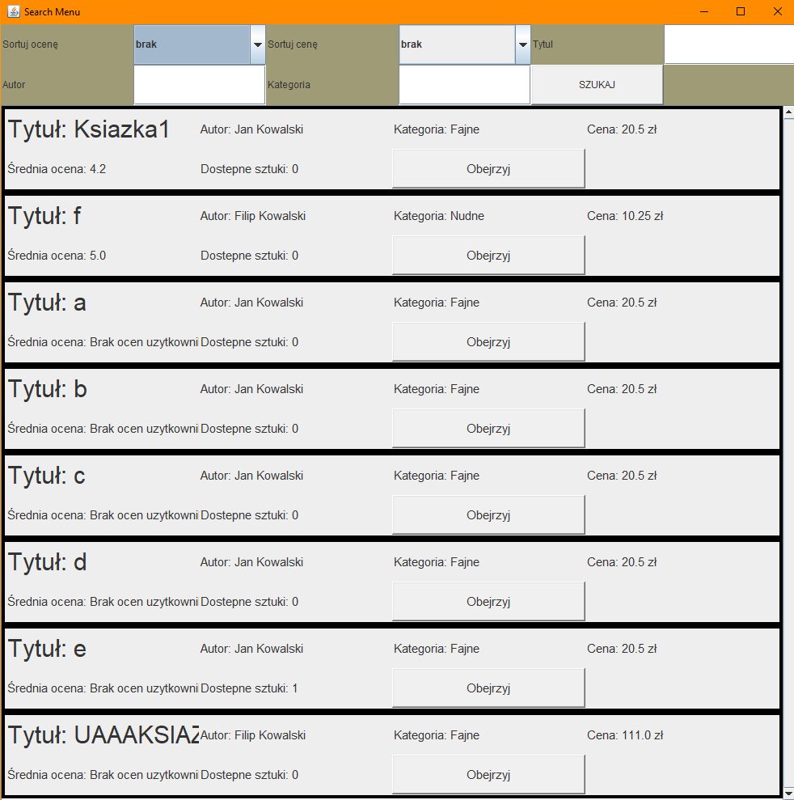

Moje projekty
Isengard - Projekt Bazodanowy
Projekt miał na celu zaimplementować aplikację pozwalającą na przeglądanie oraz zamawianie książek. Aplikacja jest podłączona do uprzednio skonfigurowanej bazy danych. Aplikacja posiada bezpieczny system rejestracji i logowania posiadający zabezpieczenia przeciwko atakom sql injection. Chińskie Warcaby
Gra napisana w Java umożliwiająca rozgrywkę sieciową od 2 do 6 graczy w Chińskie Warcaby. System został zaprojektowany z myślą łatwej modyfikacji dlatego też bez problemu można dodać inne rozgrywki jak np. warcaby, szachy czy inne gry planszowe.Fragment kody odpowiedzialny za generowanie ruchów
public ArrayList<Vector2> getAvailableMovesForPos(Board board, int x, int y,boolean movedInThisTurn)
{
ArrayList<Vector2> outcome = new ArrayList <Vector2>();
for(int i=0;i < availableMoves.size();i++) {
Move option = availableMoves.get(i);
if(option instanceof NormalMove && movedInThisTurn) {
// System.out.println("Pomija ruch");
}else {
option.generateMoves(board, x, y, outcome);
}
}
return outcome;
}